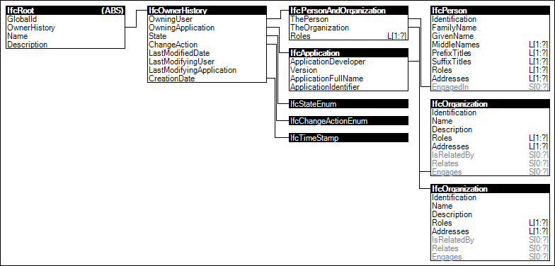

Link to this page
Link to this pageWhile objects may reflect a final state, they may also be continually revised over the course of a project lifecycle and reflect transient state. For scenarios of multiple users making updates to the same information, there is a concept of local copies of information based upon a shared repository supporting multiple users. Such shared repository is often referred to as a model server. A model server is similar in concept to a document revision server, but is able to identify changes declared on a per-object basis rather than inferring changes from differences in text. A model server has a concept of revisions on a per-project basis, where each revision consists of a set of changes to contained objects by a particular user at a particular time.
To support a model server scenario, each object may be marked with a change action indicating the object was added, modified, deleted, or has no change since the project was retrieved from the server at a particular revision sequence. Given an object's identity (IFC-GUID) and change action, the state of the object may be merged when submitted to a model server. An object is considered modified when any of its direct attributes change, attributes on a referenced resource definition (any entity not deriving from IfcRoot) change, items are added or removed from sets, or items are added, removed, or reordered within lists.
For cases when multiple users make conflicting changes to the same objects, users may choose to keep their own changes, accept changes from others, merge both changes, or a combination thereof upon submitting to a server. Alternatively, to avoid such merge scenario and coordinate work, objects may be locked such that a particular user has exclusive access to read and/or write a particular object at the current time.
Project libraries may also be retrieved from model servers having particular revision, and potentially different server URI than the referencing Project. As a project may include multiple revisions of the same project library (a common scenario when multiple users are involved using libraries revised by others), the IfcRoot.ObjectIdentifier IFC-GUID is only valid within the scope of the referencing project, and a separate library reference identifies a project library based object within its originating model server.
Finally, objects may also carry informational attributes indicating when an object was created, who, when, and what application was used to last modify an object, and who currently owns the object, potentially having exclusive use according to its lock state.
Figure 90 illustrates an instance diagram.
 |
Figure 90 — Revision Control |